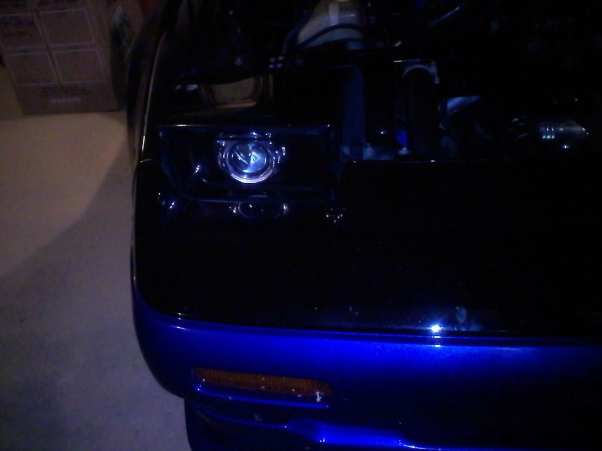
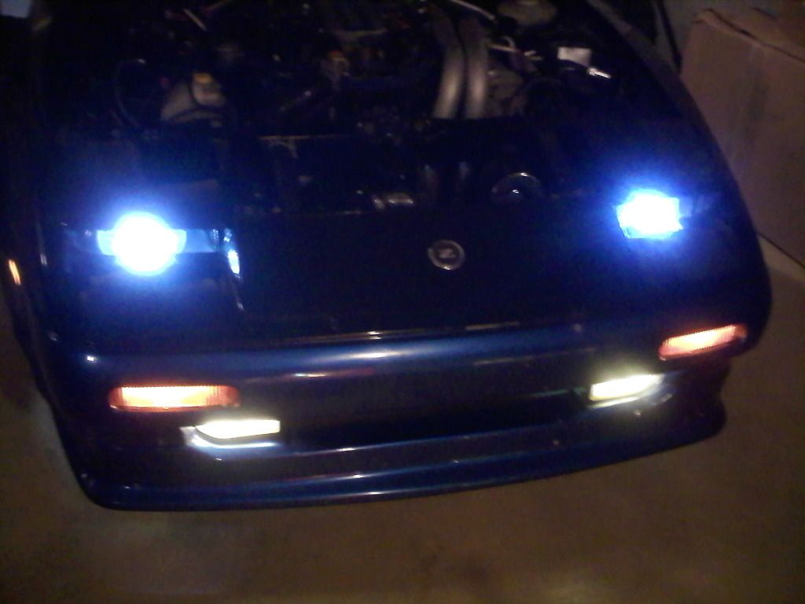
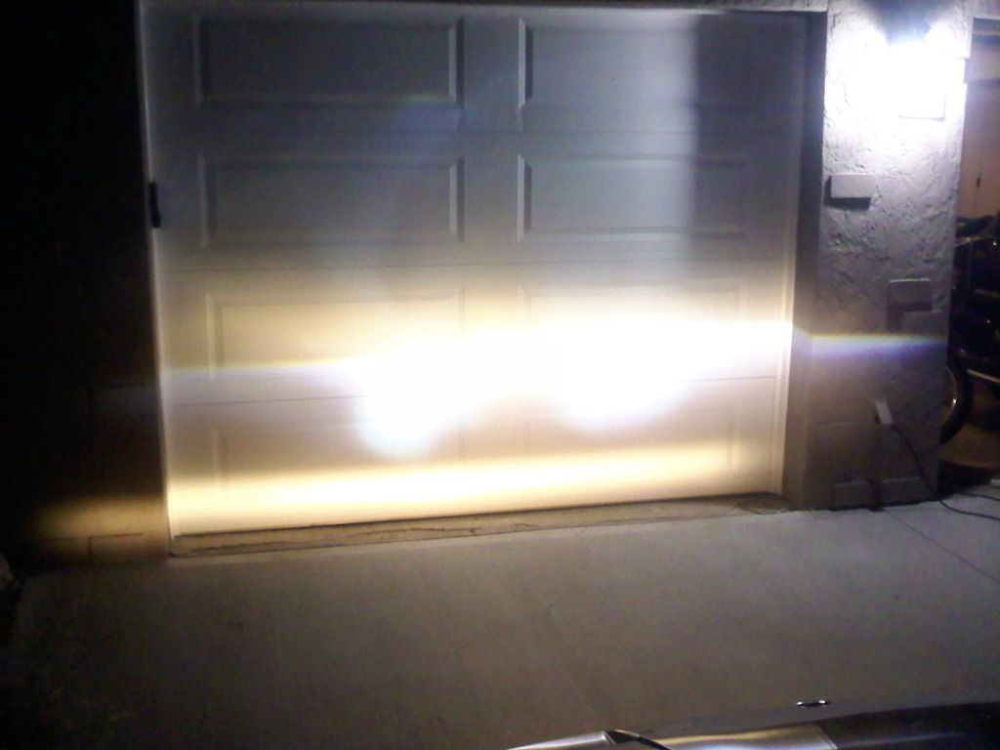
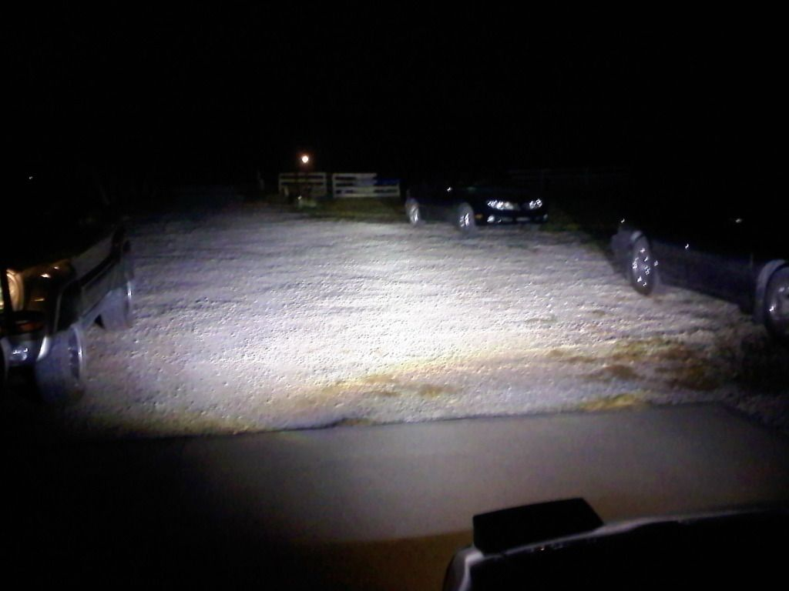
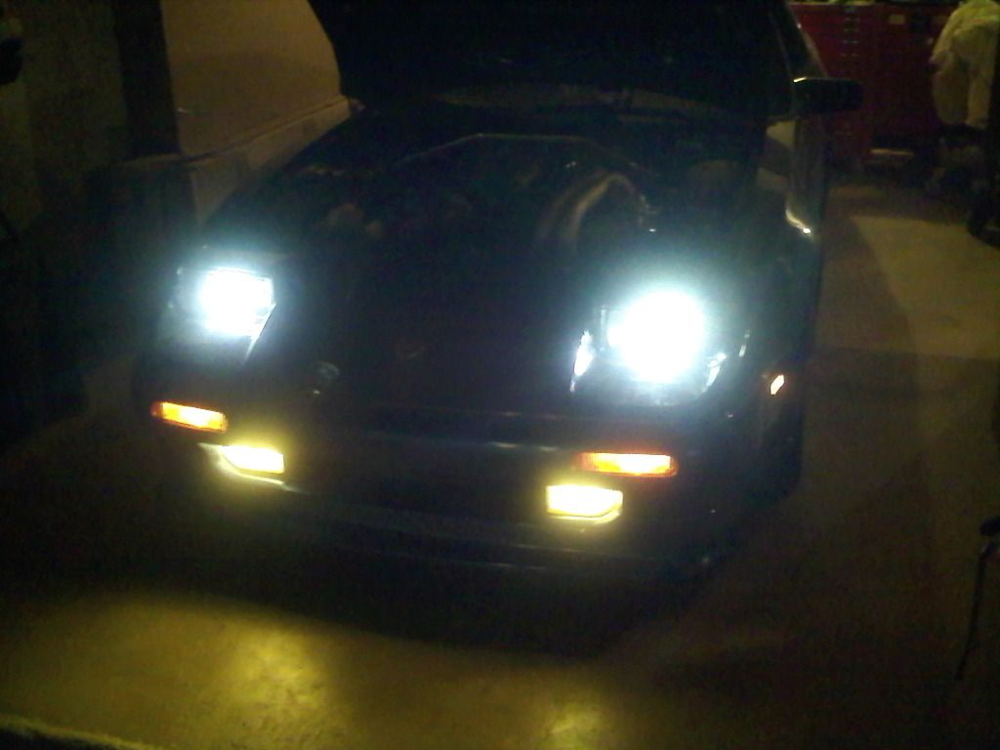
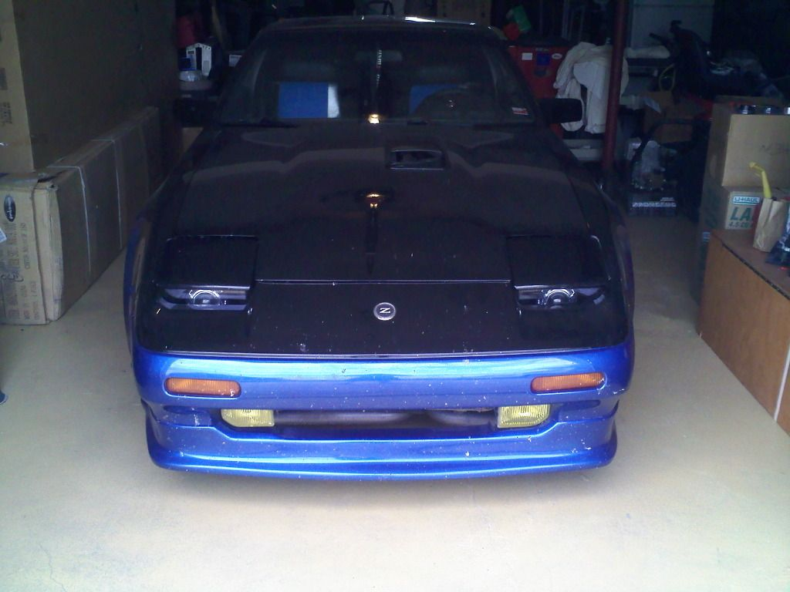
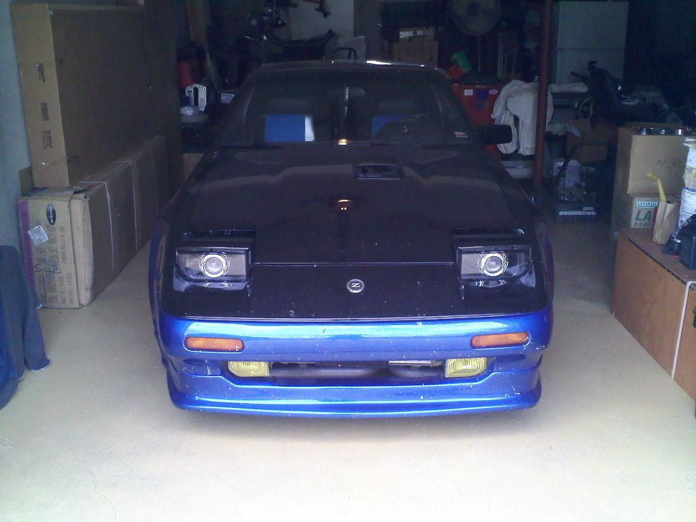
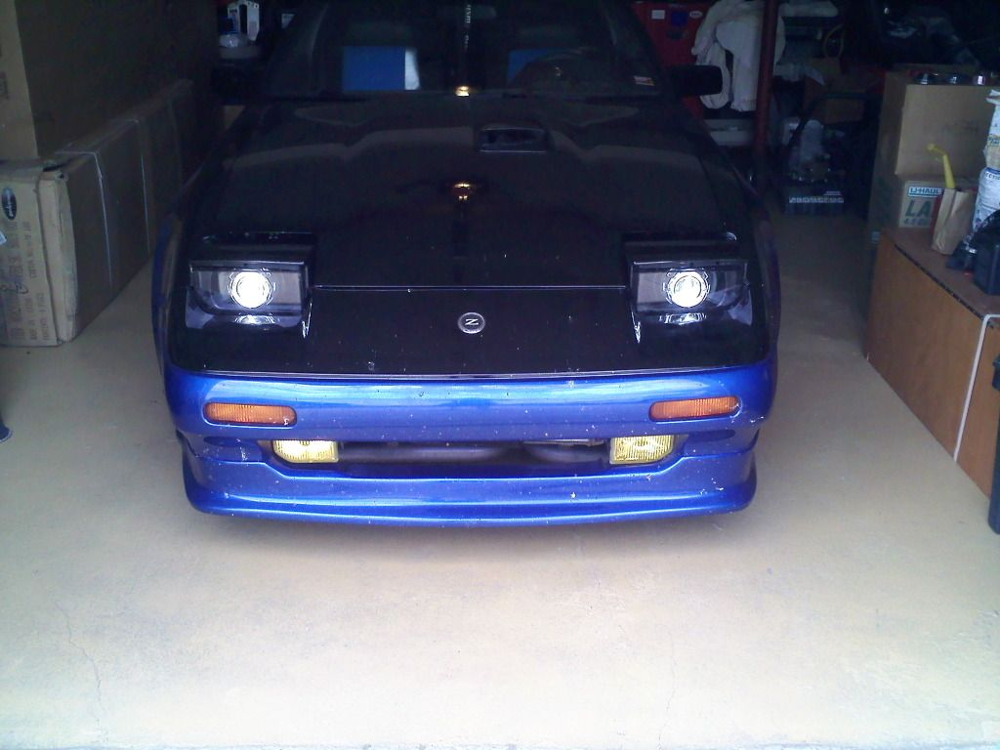
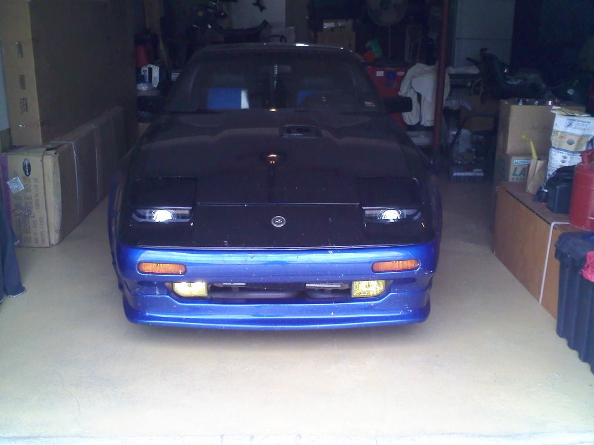
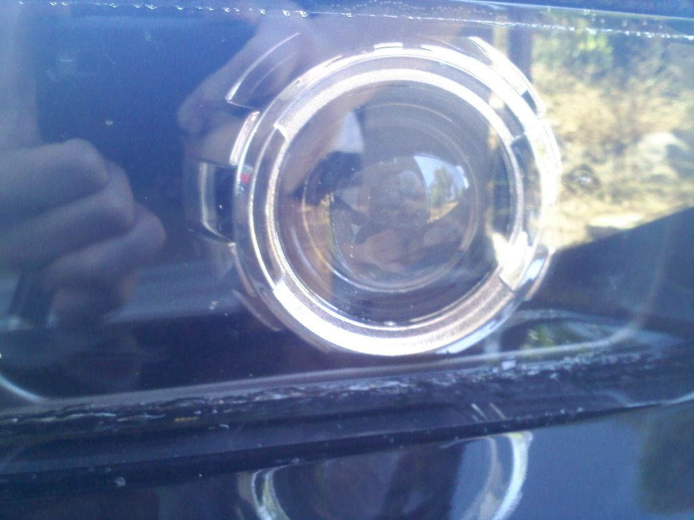

-
well, ive got the lights but the outter ring around the headlights broke off and needs to be glued back on, so its going to be a few more days…1989 Nissan 300zx Turbo "MAW Edition"
viewtopic.php?f=13&t=10617

-
....yeah im not happy about that. Not happy at all.J18199 wrote: well, ive got the lights but the outter ring around the headlights broke off and needs to be glued back on, so its going to be a few more days…My Build Thread -
[quote]862sik wrote:After the amount of labor that has gone into this project- please… Don't be discouraged. EverythingOriginally posted by J18199
WORTHWHILE on the Z31 takes considerable time and effort. From the custom whaletail that I have
been working on, to the complete white LED instrumentation conversion, to the tool storage area fiberglass
subwoofer enclosure- each section has its' own set of problems and rewards for overcoming the inherent setbacks.
YOU are enriching the Z31 community. Thank you for the effort you've expended so far and KEEP UP THE FINE WORK!Everything is Meaningless. -
[quote]PulseCode wrote: [quote=862sik]Thanks, its just depressing that the first thing I came up for the z community is something that got messed up during shipping LOL.Originally posted by J18199
Well, things happen. Learn from them =)My Build Thread -
Well, I wasnt about to let it slow me down, I got ambitious and excited about it, so I popped em in the oven and used a 2 part epoxy called ATACS, awesome stuff if you want shit to STAY lol. these lights are awesome.. bright as hell lol…my dad and I were able to make shadows on the trees about a quarter mile away with the lights on high beam LOL.
yes, ik the car is dirty…its been awhile and ive been busy









1989 Nissan 300zx Turbo "MAW Edition"
viewtopic.php?f=13&t=10617
-
beautiful cutoff line. I like that!!

1988 300zxt. gt35, stance, etc. Wheels: Varrstoen ES2 18x9.5 et-13 225/40. 18x10.5 et0 245/40
1990 jetta vr6'd -
Im excited to drive it tonight to see how bright it really is lol…its pretty crazy bright. I love it!1989 Nissan 300zx Turbo "MAW Edition"
viewtopic.php?f=13&t=10617
-
it looks very good, very good job, it look like transformers car -
Wow they look great on the car. This is the first time I get to see them mounted!
For that epoxy, I didnt want to use it. I wanted to use the sealant I use because its a OEM sealant, and its harder than standard butyl because it has an adhesive in it. I want the ability to remove it if I had to. Did the acrylic distort or discolor when you put it in the oven? But id like to know more about that expoxy for future projects,.
But Id like to see a closeup on how you guys glued it…did you guys remove all the old stuff? Can you also show me a close up of the light so I can see just how much of the borders actually show?
How is the fitment of the lenses, did you have any clearence issues? How do you like the custom lens?
As for the picture of the cutoff, the car being further away will show it better.
Im glad you are excited. I am as well.My Build Thread -
I Want!
Looks very nice. Cutoff and all.
And yall were worried about glue showing. From that close shot in front of the car it looks perfectly fine. No one is looking at it an inch away from the lense.
Now to photoshop one of those pictures with an LED strip in the top of the lense. :twisted: -
acrylic is perfectly fine, baked it for like…15 mins or so at 170* then it peeled right apart. any of the old glue you used on the plastic silver housing around it was gone, no sign of anything…as for the clips on the back of the silver housing, one was broke / missing, did you break it before? It wasnt rattling around inside it.862sik wrote: Wow they look great on the car. This is the first time I get to see them mounted!
For that epoxy, I didnt want to use it. I wanted to use the sealant I use because its a OEM sealant, and its harder than standard butyl because it has an adhesive in it. I want the ability to remove it if I had to. Did the acrylic distort or discolor when you put it in the oven? But id like to know more about that expoxy for future projects,.
But Id like to see a closeup on how you guys glued it…did you guys remove all the old stuff? Can you also show me a close up of the light so I can see just how much of the borders actually show?
How is the fitment of the lenses, did you have any clearence issues? How do you like the custom lens?
As for the picture of the cutoff, the car being further away will show it better.
Im glad you are excited. I am as well.
as for the borders, I just made them even all around, and its perfectly alligned with the road and they are pointing straight. no fitment issues, went right in after putting the mounting bracket on it. no clearance issues....I should get a pic of the lights shining on the trees across the road…heh, I did some adjustments and they arent aimed as high anymore.
Now, ATACS, is an AMAZING epoxy, two part as ive said, and they use it to fix aircraft, and with aircraft, it has to be strong. So for any future projects, get it alligned how you see fit, and then use that (you may not be able to get it at any store, ebay im sure has it) ATACS will forever bond it in whatever way you want. wont ever have to worry about anything falling apart.1989 Nissan 300zx Turbo "MAW Edition"
viewtopic.php?f=13&t=10617
-
[quote]J18199 wrote:What clips are you talking about? Are you talking about the OEM bulb holder for the oem light? If so then yes I cut them out to make room so that the projector sits nicely. I had it in there with the OEM mount but it would make it near impossible to align them and tighten them back down, and at the same time create a seal so that water wouldnt get in. So the way that I mounted everything was the only way I can do it. But when you said one was broke....I know I didnt do both of them exactly the same. One was a little different than the other. It wasnt broke, it was modified.Originally posted by 862sikMy Build Thread -
ah I got ya, because I saw the tab missing and wondered where it went.1989 Nissan 300zx Turbo "MAW Edition"
viewtopic.php?f=13&t=10617
-
So, stop playing with your lights and post some pictures of the output. I know how you can get carried away by just driving around with new lights LOL.My Build Thread -
Heres a close up, and I washed it last night and no water in it either, so its sealed pretty well.
1989 Nissan 300zx Turbo "MAW Edition"
viewtopic.php?f=13&t=10617

Copyright © 2006–. All rights reserved. Privacy Policy